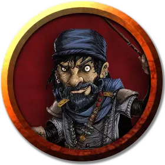

Лоссер Мирклав
Losser Mirklav
Маленький Гуманоид (Легконогий полурослик), хаотично-злой, именной НИП

Класс Доспеха 12 (15 с доспехами мага)
Хиты 31 (9к6)
Скорость 30 футов
| мод | спас | ||
|---|---|---|---|
| СИЛ | 9 | −1 | −1 |
| ЛОВ | 14 | +2 | +2 |
| ТЕЛ | 11 | +0 | +0 |
| мод | спас | ||
|---|---|---|---|
| ИНТ | 17 | +3 | +6 |
| МДР | 12 | +1 | +4 |
| ХАР | 11 | +0 | +0 |
Навыки История +6, Магия +6
Чувства пассивное Восприятие 11
Языки Общий, Полуросликов
Опасность 6 (2300 опыта)
Бонус мастерства +3
Особенности
Храбрый. Лолтер совершает с преимуществом спасброски от испуга.
Проворство полуросликов. Лолтер может проходить сквозь пространство, занятое существами, чей размер больше его.
Использование заклинаний. Лолтер является заклинателем 9-го уровня. Его базовой характеристикой является Интеллект (Сл спасброска от заклинания 14, +6 к попаданию атаками заклинаниями). У него подготовлены следующие заклинания волшебника:
• Заговоры (неограниченно): волшебная рука, огненный снаряд, свет, фокусы
• 1 уровень (4 ячейки): волшебная стрела, доспехи мага, обнаружение магии, щит
• 2 уровень (3 ячейки): внушение, туманный шаг
• 3 уровень (3 ячейки): восставший труп, огненный шар, полёт
• 4 уровень (3 ячейки): град, усыхание.
• 5 уровень (1 ячейка): конус холода.
Фамильяры. У любого заклинателя, который может накладывать поиск фамильяра [find familiar] (у мага или архимага, например), скорее всего, будет иметься фамильяр. Фамильяр может быть одним из существ, описанных в заклинании, либо любым другим Крохотным чудовищем, таким как ползающая рука, бес, псевдодракон или квазит.
Действия
Кинжал. . Рукопашная или дальнобойная атака оружием: +5 к попаданию, досягаемость 5 футов или дистанция 20/60 футов, одна цель. Попадание: Колющий урон 4 (1к4 + 2).
Описание
Лолтер Мирклав — легконогий полурослик-маг.
При себе Лолтер носит книгу заклинаний с обложкой из кожаных лоскутов со всеми своими подготовленными заклинаниями. При нём также ключ от запертой двери в зоне О8 и 4к10 зм в кошельке из кожи эльфа, стянутом верёвочкой из волос дварфа.
Лолтер немного переоборудовал подземелье:
• В зоне О6 — три койки: две больших для людей-учеников Лолтера и одна поменьше для него самого.
• В зоне О10—двенадцать скелетов, которые атакуют любого, кроме Лолтера и его учеников.
• В зоне О11—груды человеческих костей, похищен ные из Города Мёртвых. У Лолтера ещё не дошли руки оживить их.